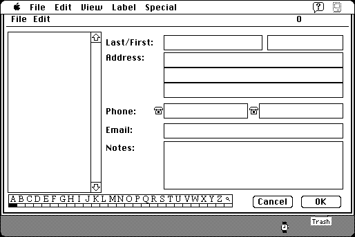

Download
PopAddress1.01.zip (209K) PopAddress 1.01 repackaged into a zipped hfs disk image and checksum file. The disk image can be mounted with Mini vMac.
PopAddress1.01.sea.hqx (324K) PopAddress 1.01 in the original format.
copyright: John V. Holder
mod date: Mar 7, 2001
license: shareware
last known url
(gone)
An address book with configurable pop-up keys, “that will make keeping track of contacts, dialing the phone, printing envelopes, and more so easy!” You can “access your address book instantly from within any application!” For System “7 on up”.

If you find these downloads useful, please consider helping the Gryphel Project, which hosts them.
Here are the md5 checksums for the downloads, signed with Gryphel Key 5:
--------- GRY SIGNED TEXT --------- e88d48b2832292429096f6ab314b223f PopAddress1.01.zip 3c474c1c2daad4ffea5682018c747482 PopAddress1.01.sea.hqx ------- BEGIN GRY SIGNATURE ------- Gry/4Xa8CFcUzxdN/NTq6Q6xrxM2iM5TGHUQiMEOHv7UhjPneGmoocRA6og8YTJq 1ltf6ZkrkUrAA+6lKuyUHNnaPlmVoAGMdcTan5U5DPjmR1JOhS+LTPj3gH5XwxcT OLXW2OU2Tgw6UBKev0zcZo5c7EzXl40fIUaEpVc07A4/8ohft76Or26nZX5CX7T7 -------- END GRY SIGNATURE --------